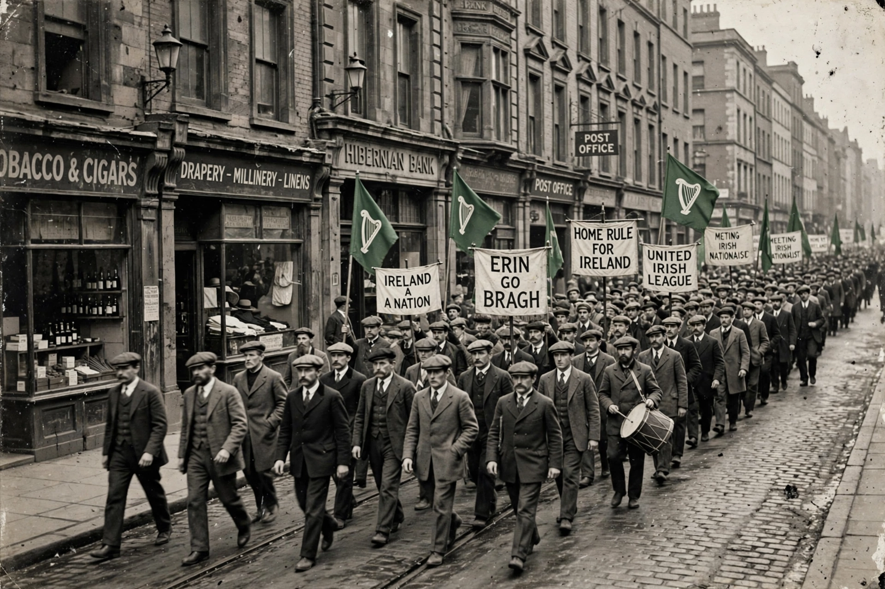

Irish nationalism is a nationalist political movement which, in its modern form, asserts that the people of Ireland should govern Ireland as a sovereign state. Since the mid-19th century, Irish nationalism has largely taken the form of a popular movement seeking independence from Great Britain, culminating in the establishment of the Irish Free State in 1922 and, for many nationalists, the continuing aspiration to a united Ireland.
| Irish nationalism | |
|---|---|
| Key events | 1798 Rebellion; Easter Rising 1916; Anglo-Irish Treaty 1921; Good Friday Agreement 1998 |
| Key figures | Wolfe Tone, Daniel O'Connell, Charles Stewart Parnell, Éamon de Valera |
| Goal | Irish self-government; historically a united independent Ireland |

Early Irish nationalism grew from resistance to English rule and the penal laws against Catholics. The Society of United Irishmen, inspired by the American and French revolutions, launched the Rebellion of 1798. After the Acts of Union 1800, Daniel O'Connell built a mass movement that won Catholic emancipation in 1829 and campaigned for repeal of the Union.
In the later 19th century the movement split between constitutional nationalists, who sought Home Rule within the United Kingdom, and physical-force republicans, the Fenians. Under Charles Stewart Parnell, the Irish Parliamentary Party came close to success: Gladstone introduced Home Rule bills in 1886 and 1893, and a third bill passed in 1914 but was suspended for the First World War.
The Easter Rising of 1916 and Sinn Féin's victory in the 1918 election transformed the movement. The Irish War of Independence led to the Anglo-Irish Treaty and the Government of Ireland Act 1920, which partitioned Ireland: the Irish Free State emerged in the south while Northern Ireland remained in the United Kingdom.
In Northern Ireland, nationalist grievances over discrimination fed the civil rights movement and then the Troubles (c. 1968–1998), in which republican paramilitaries such as the Provisional IRA fought to end British rule. The Good Friday Agreement of 1998 established power-sharing and recognised that Northern Ireland's status can change only by consent, while allowing people there to identify as Irish, British, or both.